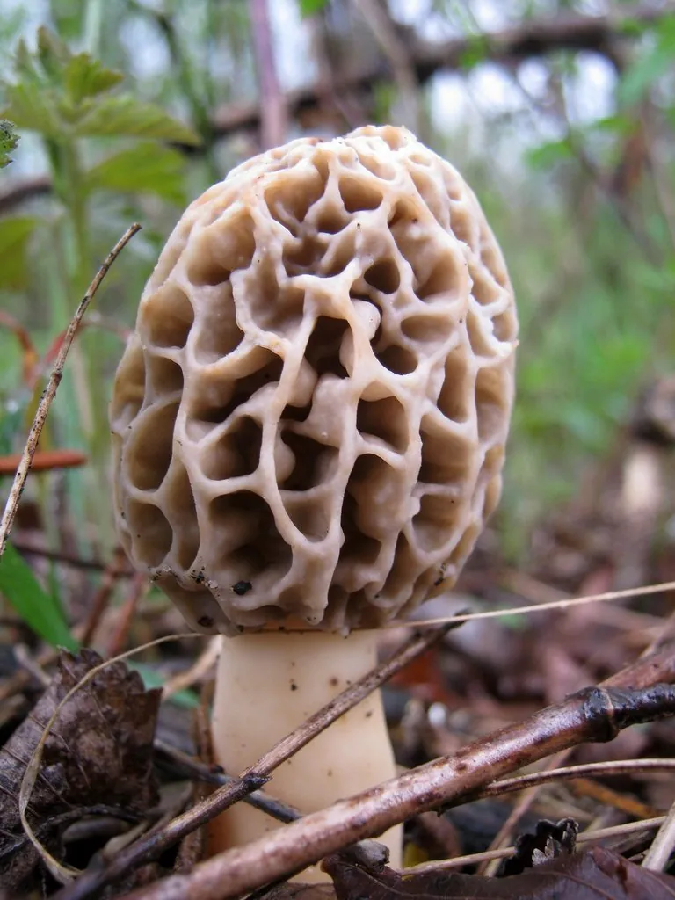

真菌 · 真菌界
羊肚菌 Morchella esculenta

菌盖表面布满蜂窝状凹坑的珍稀食用菌，形似羊肚，味道鲜美，是春季最受欢迎的野生菌之一，已可人工栽培。
- 分类
- 门子囊菌门纲盘菌纲目盘菌目科羊肚菌科属羊肚菌属
- 栖息环境
- 阔叶林和针阔混交林的林缘、草地、火烧迹地，春季出菇
- 地理分布
- 欧洲、北美和东亚，中国甘肃、四川、云南、陕西等地有分布
- 保护级别
- 暂无评估（IUCN 未评估，中国未列入重点保护名录）
物种志
羊肚菌是子囊菌门盘菌目的真菌，子实体单生或群生。菌盖呈圆锥形至卵圆形，长 4–10 cm，表面布满不规则的蜂窝状凹坑，凹坑之间是浅色的网棱，形状像羊肚，因此得名；菌盖颜色从浅黄褐到深褐色不等；菌柄白色，粗短，中空；子囊果内产生子囊孢子。
羊肚菌多生于阔叶林、针阔混交林的林缘、草地上和火烧迹地，春季出菇，在中国甘肃、四川、云南、陕西等地有分布。它的味道鲜美、香气独特，是春季最受欢迎的野生食用菌之一，干制后香气更浓。野生羊肚菌必须充分加热后食用，生食可能引起不适；如今羊肚菌已实现人工栽培，市场上也能买到栽培品种，但栽培与野生菌种差别较大。
形态与习性
- 菌盖长 4–10 cm，表面有蜂窝状凹坑
- 菌柄白色，粗短，中空
- 孢子产生于子囊内，子囊果成熟后释放
- 采收期春季，林缘和火烧迹地出菇
- 食用性可食，必须充分加热
- 栽培已实现人工栽培，栽培与野生菌差异较大
- 经济价值干制后香气浓郁，价格较高
趣味知识
- 羊肚菌的菌盖布满蜂窝状凹坑，形状像羊肚，因此得名。
- 它多在春季林缘和火烧迹地上出菇。
- 羊肚菌已实现人工栽培，是重要的经济真菌。
- 野生羊肚菌必须充分加热后食用。